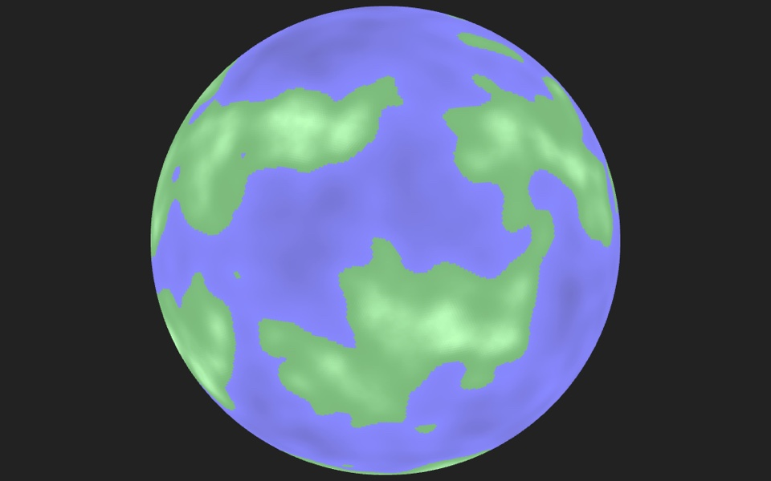
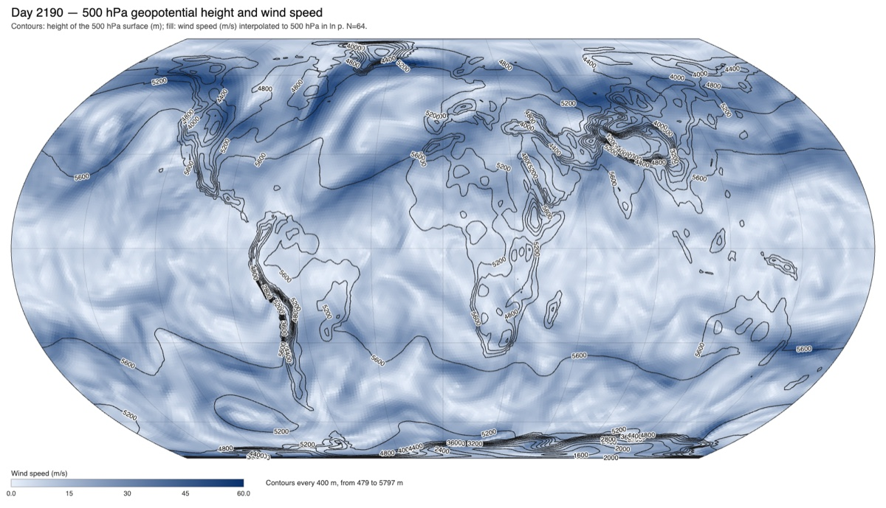

WebGCM
A global climate model that runs in your browser.
Climate model
A global climate model running live: a hydrostatic atmosphere with 27 levels on a geodesic C-grid, moist convection and clouds, a 24-layer ocean with a mixed layer over 23 isopycnal layers, sea ice, snow and soil on real continents with terrain. Every kernel runs on the graphics card through WebGPU. It picks up from day 810 of a spin-up, at 128 subdivisions on a desktop, about 164,000 cells 56 km across, or 64 on phones and tablets, about 41,000 cells 112 km across; a quick test when the page opens picks the engine and the resolution your device runs well. You can colour the globe by wind, temperature, pressure, rain, clouds, ice or ocean currents, draw isobars, follow the wind with particles or arrows, watch the planet from space, and save snapshots.
Best in a browser with WebGPU (Chrome, Edge or Safari 26). Without it the model falls back to a slower CPU engine. The starting state is a 98 MB download on a desktop and 25 MB on phones and tablets.
Open the climate model →
Geodesic grid
Where the project began, and where its repository got its name: an icosahedron subdivided into 100,002 hexagonal cells, twelve of them pentagons, shaded by procedural terrain and rendered with Three.js. Drag to rotate, scroll to zoom.
View the grid →
Synoptic charts
Weather-map plots drawn from saved model states: geopotential height contours and wind speed at standard pressure levels on an Equal Earth projection, downloadable as SVG or PNG.
Draw a chart →